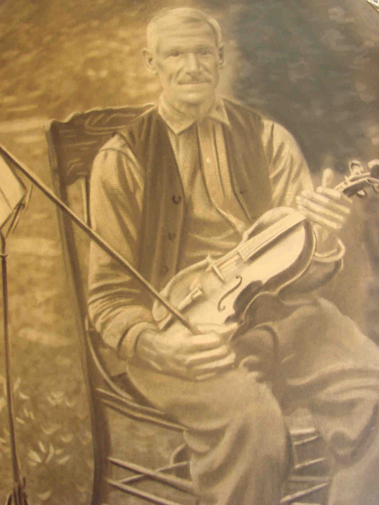

 John WATSON (1855-1917) |
John WATSON
• He appeared in the 1900 census on 12 Jun 1900 in Connellsville, Fayette, PA. 2 • He appeared in the 1910 census on 3 May 1910 in Dunbar Twp., Fayette, PA. 1 John married Jannet CREIGHTON, daughter of William CREIGHTON and Catherine BARNER, about 1881.1 (Jannet CREIGHTON was born in Jan 1864 in Ohio 2 and died on 31 Mar 1919 in Connellsville, Fayette, PA 4 5.) |
1 Pennsylvania, Fayette County, 1910 U.S. Census, Population Schedule, (Washington, D.C., National Archives and Records Administration), ED 19, Sheet 29, Line 35.
2 Pennsylvania, Fayette County, 1900 U.S. Census, Population Schedule, (Washington, D.C., National Archives and Records Administration), ED 11, Sheet 15, Line 85.
3 The Daily Courier, John Watson Obituary, (Connellsville, PA 11 Jun 1917).
4 W. C. Henderson, Petition for Partition of the Estate of William Creighton, (Westmoreland County, 31 Mar 1932).
5 The Daily Courier, Jannet Creighton Watson Obituary, (Connellsville, PA 31 Mar 1919).
{kind=link}